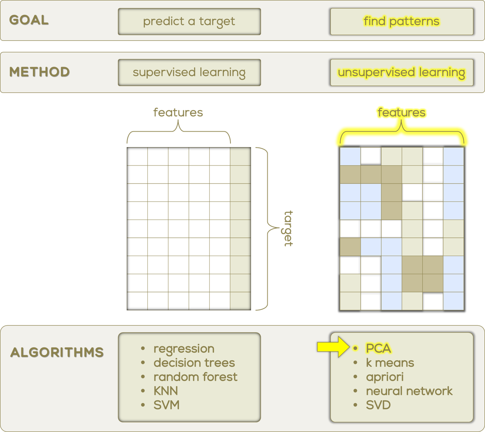

Principal Component Analysis and Machine Learning Methods. In our research, we learn the applications of how important and groundbreaking Principal Component Analysis and Machine Learning Methods are. In these papers we see how promising the impact is of PCA with recognizing Microanerysm in medicine and how groundbreaking has been critical for diagnosis and treatment of Diabetic Retinopathy. Other research papers show a framework for coronary artery disease risk assessment in intravascular ultrasound. The paper reflects on a novel strategy for risk stratification based on plaque morphology embedded with principal component analysis (PCA) for plaque feature dimensionality reduction and dominant feature selection technique.(Gorgoglione et al. 2021) Facial recognition with PCA and machine learning methods, From this Paper the authors have identified that the best way to compare and evaluate the Facial Recognition results with speed and accuracy was with PCA (Principal Component Analysis) and as well as Support Vector Machine (SVM). Lastly we see the importance of PCA with it identifying that the best way to compare and evaluate the Facial Recognition results with speed and accuracy was with PCA (Principal Component Analysis) and as well as Support Vector Machine (SVM)(A 2022).
Principal Component Analysis (PCA) is the name for a process of reducing the dimension of a large data set (when the observations one wishes to compare is described by many variables) into a smaller simplified version of the original data set that retains the most salient features of the data. PCA is a broadly used statistical method whose use stretches across many scientific disciplines, and in turn many different adaptations of PCA have been developed based on the variation in goals and data types associated with each respective discipline. PCA was developed first by Pearson (1901) and Hotelling (1933) (A 2022). This technique transforms some number of possibly correlated variables into a smaller number of variables, the variables in this smaller matrix are referred to as the Principal Components (PC). This is achieved using a vector space transform. By mathematical projection we can interpret the original data set with just a few variables, namely the principal components achieved through calculation. The purpose of reducing dimension size in large data sets is to make it easier to spot trends, patterns, and outliers in data where that information would have previously been hidden by the size of data set of interest (Richardson). The information being preserved in the process of reduction is the variability in the data (i.e. the statistical information present in the data). In order to preserve as much variability as possible we should “…find new variables that are linear functions of those in the original data set, that successively maximize variance and that are uncorrelated with each other” (Jolliffe IT 2016). PCA assumes no distribution in data in a descriptive context which is one of it’s key features that makes it so widely adaptive as an exploratory method across disciplines and data types (Jolliffe IT 2016). To lists all of PCA’s applications would be tedious and excessive, but some examples where PCA has been used is in facial recognition, image analysis, analysis of web data, and cyber security analysis. Essentially anywhere that large data sets are found PCA can be used to aid in discovering trends amongst the variables of that data. One key field PCA has seen use is in the analysis of cyber security network data. PCA could see many applications in web data analysis as the amount of data for this purpose is always increasing and becoming more relevant.
Taking a look into a real world example, say we have a dataset consisting of 1,000 students with exam scores from 7 different courses: Advanced Statistics, Probability Theory, Intro to Dance, World Religions, and Religion in America. We could group Advanced Statistics and Probability Theory into a new variable called Stats, group World Religions and Religion in America into a new variable Religion, and keep Intro to Dance by itself. We have Reduced the data set from 7 variables to 3 without much loss in variation. This is the main concept behind PCA except variables are not manually regrouped but instead the new variables (principal components) are derived from certain linear combinations of the original variables (Lang and Qiu 2021).
PCA can also be useful when studying mental disorders, data consisting of symptoms and the connections between them. When many symptoms are being observed, it can be difficult to visually represent the connections between them, both the strength of the connections and the proximity to each other. Plotting using the first 2 principal components allows for the placement on the x or y axis to become interpretable, that is, observations far left differ in some dimension (the first principal component) compared to ones far right. The same can be said in the y direction (Jones, Mair, and McNally 2018).

2. Methods
How PCA is used PCA is a tool for identifying the main axes of variance within a data set and allows for easy data exploration to understand the key variables in the data and spot outliers. Properly applied, it is one of the most powerful tools in the data analysis tool kit. PCA forms the basis of multivariate data analysis based on projection methods. The most important use of PCA is to represent a multivariate data table as smaller set of variables (summary indices) to observe trends, jumps, clusters and outliers. This overview may uncover the relationships between observations and variables, and among the variables. Statistically, PCA finds lines, planes and hyper-planes in the K-dimensional space that approximate the data as well as possible in the least squares sense. A line or plane that is the least squares approximation of a set of data points makes the variance of the coordinates on the line or plane as large as possible.
Sample Data:
\(X_1\)
\(X_2\)
…
\(X_j\)
…
\(X_p\)
\(x_1\)
\(x_{11}\)
\(x_{12}\)
…
\(x_{1j}\)
…
\(x_{1p}\)
\(x_2\)
\(x_{21}\)
\(x_{22}\)
…
\(x_{2j}\)
…
\(x_{2p}\)
…
…
…
…
…
…
…
\(x_j\)
\(x_{i1}\)
\(x_{i2}\)
…
\(x_{ij}\)
…
\(x_{ip}\)
…
…
…
…
…
…
…
\(x_n\)
\(x_{n1}\)
\(x_{n2}\)
…
\(x_{nj}\)
…
\(x_{np}\)
Note
No assumptions about the variable distributions needed
PCA results depend on the scale or units of the variables so, for unscaled data, calculations should either be preformed on the correlation matrix (instead of the covariance matrix) or the data should be standardized with mean 0 and variance 1 (z scores). (Lang and Qiu 2021)
%%{init: {'theme': 'base', 'themeVariables': { 'background': '#FAFAF5', 'primaryColor': '#EAEAD6', 'nodeBorder': '#8B814C', 'lineColor': '#8B814C', 'primaryTextColor': '#191970', 'textColor': '#191970', 'fontSize': '12px', 'width': '100%'}}}%%
flowchart LR
A[(Clean<br/>Data)] --> B(Est<br/>Sample<br/>Mean<br/>Vector)
B --> C((Are all<br/>vars the same<br/>same scale/unit?))
C --- D((Yes))
C --- E((No))
D --> G(Est<br/>Sample<br/>Cov<br/>Matrix)
E -.- F(Stdz<br/>Data)
E --> H(Est<br/>Sample<br/>Corr<br/>Matrix)
F -.- G
G --> I(Eigenvals<br/>Eigenvecs)
H --> I
# READ DATA FROM A GITHUB CSV FILEconspiracy<- (read.csv("https://raw.githubusercontent.com/bjcarr08/sampleData/main/kaggleConspiracyTheoriesData.csv", stringsAsFactors = T))[,-1]# VARIABLES#kable(DescTools::Desc(conspiracy)[[1]]$abstract)str(conspiracy)
# REMOVE ROWS WITH NAs & IMPOSSIBLE VALUES (removed rows where participant marked 'not sure' as political ideology)conspiracy<- conspiracy[complete.cases(conspiracy),] %>%filter(y!="Not Sure")
Visualize Distributions
Code
# TRANSFORM TO LONG DATA FOR PLOTSconspiracy.Long<- conspiracy %>%pivot_longer(!y, names_to="conspiracy", values_to="score", values_transform=list(score=as.numeric))# HISTOGRAMSggplot(conspiracy.Long, aes(score, fill=conspiracy, color=conspiracy)) +geom_histogram(alpha=0.2, breaks=seq(0,5,1)) + lemon::facet_rep_wrap(.~conspiracy, nrow=2, labeller="label_both", repeat.tick.labels=T) +labs(title="Raw Scores") +theme_bw() +theme(legend.position ="none",panel.border =element_rect(color ="#8B814C"),strip.background =element_rect(fill ="#EAEAD6", color ="#8B814C"),strip.text =element_text(color ="#8B814C"),plot.background =element_rect(fill ="#FAFAF5"),axis.text =element_text(color ="#8B814C"),axis.title =element_text(color ="#8B814C"),plot.title =element_text(color ="#8B814C"),axis.ticks =element_line(color ="#8B814C"))
PCA
Code
options(width =100)# STANDARDIZE DATA#conspiracy.Stdz<- conspiracy %>% mutate(across(.cols=truther911:vaportrail, scale))#conspiracy<- conspiracy %>% mutate(across(.cols=truther911:vaportrail, scale))# RE-LEVEL POLITICAL IDEOLOGY (Very Liberal - Very Conservative)conspiracy$y<-factor(conspiracy$y, levels=c("Very Liberal", "Liberal", "Somewhat Liberal", "Middle of the Road", "Somewhat Conservative", "Conservative", "Very Conservative"))# RE-NAMED VARIABLE 'y'names(conspiracy)[9]<-"PoliticalIdeology"# DATA FOR PCA FUNCTION (only keep numeric variables)df<- conspiracy[,-9]# PCA#pc1<- prcomp(df, scale.=T)pc1<-prcomp(df)summary(pc1)
A, Camargo. 2022. “PCAtest: Testing the Statistical Significance of Principal Component Analysis in r.”PeerJ. https://doi.org/10.7717/peerj.12967.
Gorgoglione, Angela, Alberto Castro, V. Iacobellis, and Gioia Andrea. 2021. “A Comparison of Linear and Non-Linear Machine Learning Techniques (PCA and SOM) for Characterizing Urban Nutrient Runoff.”Sustainability 13 (February): 2054. https://doi.org/10.3390/su13042054.
Jolliffe IT, Cadima J. 2016. “Principal Component Analysis: A Review and Recent Developments.”Philosophical Transactions A.
Jones, Payton, Patrick Mair, and Richard McNally. 2018. “Visualizing Psychological Networks: A Tutorial in r.”Frontiers in Psychology 9 (September). https://doi.org/10.3389/fpsyg.2018.01742.
Lang, WU, and Jin Qiu. 2021. Applied Multivariate Statistical Analysis and Related Topics with r. edp sciences.